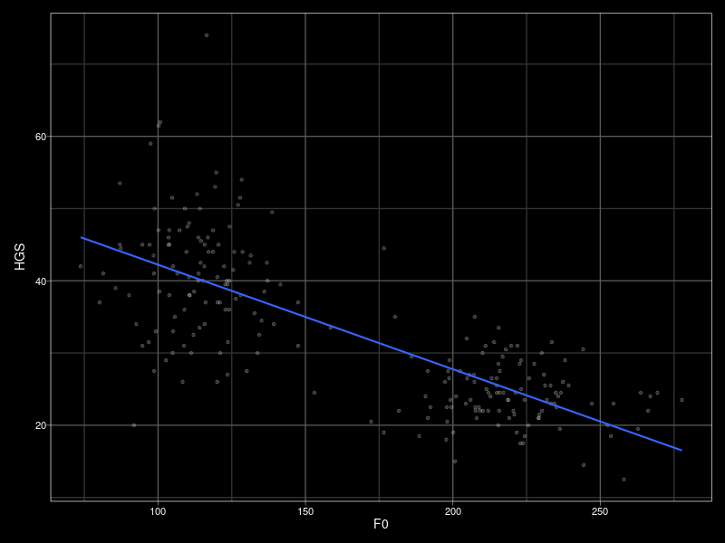
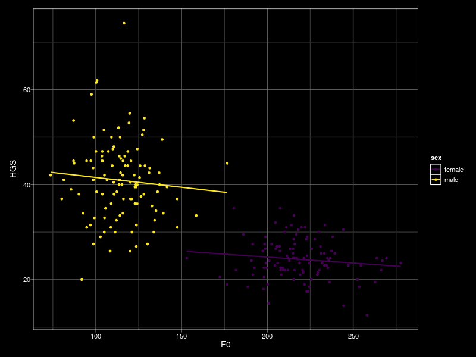
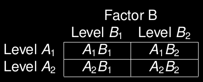
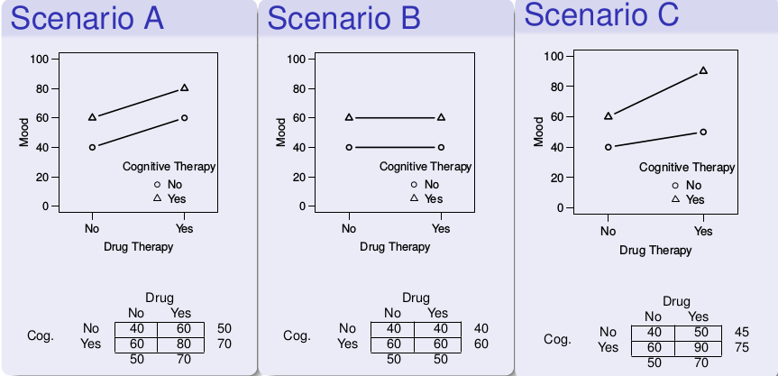
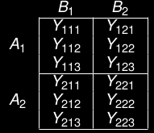
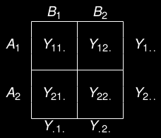
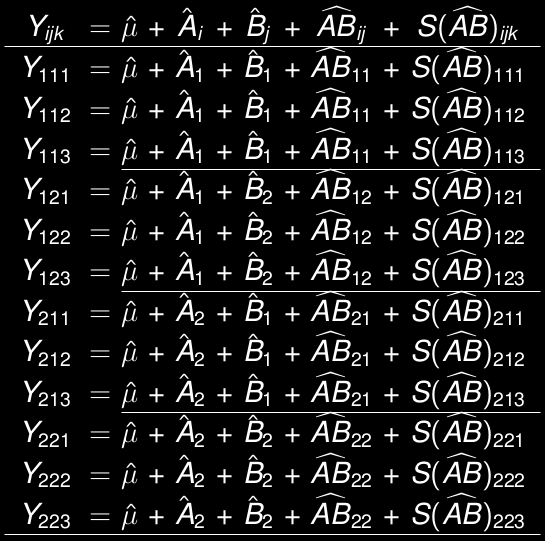

Created: 2020-10-15 Thu 16:25
“It depends.”
The effect of a predictor variable on the response variable may depend upon the value(s) of one or more other predictor variables.
# A tibble: 221 x 4
ID sex HGS F0
<int> <chr> <dbl> <dbl>
1 4 male 45.5 115.
2 7 male 31 147.
3 8 male 40 123.
4 19 male 37 120.
5 21 male 45 94.7
6 22 male 50 98.8
7 30 male 31 94.7
8 31 male 47.5 124.
9 35 male 34 92.6
10 36 male 30 111.
# … with 211 more rows
Han, C., Wang, H., Fasolt, V., Hahn, A., Holzleitner, I. J., Lao, J., DeBruine, L., Feinberg, D., Jones, B. C. Open Science Framework, retrieved from https://osf.io/na6be/.

N = 221
\(HGS_i = \beta_0 + \beta_1 F0_i + e_i\)
Call:
lm(formula = HGS ~ F0, data = hgs)
Residuals:
Min 1Q Median 3Q Max
-23.408 -4.115 -0.161 4.252 34.157
Coefficients:
Estimate Std. Error t value Pr(>|t|)
(Intercept) 56.699687 1.491239 38.02 <2e-16 ***
F0 -0.144729 0.008509 -17.01 <2e-16 ***
---
codes: 0 ‘***’ 0.001 ‘**’ 0.01 ‘*’ 0.05 ‘.’ 0.1 ‘ ’ 1
Residual standard error: 7.008 on 219 degrees of freedom
Multiple R-squared: 0.5692, Adjusted R-squared: 0.5672
F-statistic: 289.3 on 1 and 219 DF, p-value: < 2.2e-16
ggplot(hgs, aes(F0, HGS, color = sex)) +
geom_point() +
geom_smooth(method = "lm", se = FALSE)

\(HGS_i = \beta_0 + \beta_1 F0_i + \beta_2 SEX_i + \beta_3 F0_i SEX_i + e_i\)
\(= \beta_0 + \beta_2 SEX_i + (\beta_1 + \beta_3 SEX_i) F0_i + e_i \)
HGS ~ F0 + sex + F0:sex
HGS ~ F0 * sex
hgs2 <- hgs %>%
mutate(sex_male = if_else(sex == "male", 1, 0))
lm(HGS ~ sex_male * F0, hgs2) %>% summary()
Call:
lm(formula = HGS ~ sex_male * F0, data = hgs2)
Residuals:
Min 1Q Median 3Q Max
-21.859 -3.540 -0.421 3.361 33.163
Coefficients:
Estimate Std. Error t value Pr(>|t|)
(Intercept) 29.75789 6.50985 4.571 8.14e-06 ***
sex_male 15.91254 7.87733 2.020 0.0446 *
F0 -0.02508 0.02965 -0.846 0.3985
sex_male:F0 -0.01642 0.04847 -0.339 0.7351
---
codes: 0 ‘***’ 0.001 ‘**’ 0.01 ‘*’ 0.05 ‘.’ 0.1 ‘ ’ 1
Residual standard error: 6.643 on 217 degrees of freedom
Multiple R-squared: 0.6163, Adjusted R-squared: 0.611
F-statistic: 116.2 on 3 and 217 DF, p-value: < 2.2e-16


“The percentage of neurons showing cue-related activity increased with training in the mutant mice (\(p < 0.05\)), but not in the control mice (\(p > 0.05\)).”
Gelman, A., & Stern, H. (2012). The difference between “significant” and “not significant” is not itself statistically significant. The American Statistician, 60, 328–331.
Nieuwenhuis, S., Forstmann, B. U., & Wagenmakers, E. J. (2011). Erroneous analyses of interactions in neuroscience: a problem of significance. Nature Neuroscience, 14, 1105-1107.
\(Y_{ijk} = \mu + A_i + B_j + AB_{ij} + S(AB)_{ijk}\)

| \(Y_{ijk}\) | DV, sub \(k\) in row \(i\) col \(j\) |
| \(\mu\) | grand mean |
| \(A_i\) | effect of \(A\) (level \(i\)) |
| \(B_j\) | effect of \(B\) (level \(j\)) |
| \(AB_{ij}\) | interaction (cell \(ij\)) |
| \(S(AB)_{ijk}\) | error, sub \(k\) in cell \(ij\) |
\(Y_{ijk} = \mu + A_i + B_j + AB_{ij} + S(AB)_{ijk}\)

| \(\hat{\mu}\) | \(Y_{...}\) |
| \(\hat{A}_i\) | \(Y_{i..}-\hat{\mu}\) |
| \(\hat{B}_j\) | \(Y_{.j.}-\hat{\mu}\) |
| \(\widehat{AB}_{ij}\) | \(Y_{ij.}-\hat{\mu}-\hat{A}_i-\hat{B}_j\) |
| \(S(\widehat{AB})_{ijk}\) | \(Y_{ijk}-\hat{\mu}-\hat{A}_i-\hat{B}_j-\widehat{AB}_{ij}\) |

Created by Dale Barr